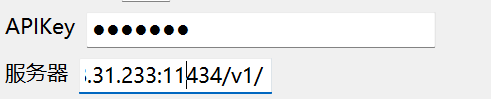
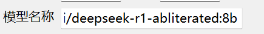

在虚拟机中调用主机上的 Ollama 服务（Windows 主机）
本教程将指导你如何在虚拟机（如 VMware、VirtualBox 等）中访问运行在 Windows 主机 上的 Ollama 服务，从而避免在虚拟机中重复部署模型。
适用于VisionQQ/QQPilot 1.5+
💡 前提条件：
- 主机已安装并能正常运行 Ollama
- 虚拟机与主机处于同一局域网（推荐使用 NAT 网络模式）
- 主机防火墙允许外部设备访问端口
11434
第一步：配置主机以允许外部访问 Ollama
每次需要从虚拟机访问 Ollama 前，请在 Windows 主机 上执行以下操作：
-
关闭正在运行的 Ollama 进程
以管理员身份打开 命令提示符 (CMD)，依次执行：taskkill /F /IM ollama.exe taskkill /F /IM "ollama app.exe" -
设置环境变量并启动服务
在同一个 CMD 窗口中继续输入：set OLLAMA_HOST=0.0.0.0 set OLLAMA_ORIGINS=* ollama serve⚠️ 安全提示：
OLLAMA_ORIGINS=*允许任意来源访问 API，仅建议在可信内网环境中使用。生产环境应限制为具体 IP 或域名。此时 Ollama 将监听所有网络接口（而不仅是
localhost），等待外部连接。
第二步：获取主机的局域网 IP 地址
-
打开一个新的 CMD 窗口（不要关闭上一步的
ollama serve窗口），运行：ipconfig -
找到当前活动的以太网或 Wi-Fi 适配器，记录其 IPv4 地址，例如：
以太网适配器 以太网: IPv4 地址 . . . . . . . . . . . . : 192.168.31.233 -
验证服务是否可远程访问
在浏览器中访问：http://192.168.31.233:11434或在 CMD 中执行：
curl http://192.168.31.233:11434若返回
Ollama is running，说明配置成功 ✅
📌 注意：确保 Windows 防火墙未阻止
11434端口。如有需要，请手动添加入站规则。
第三步：在虚拟机中配置 Ollama 客户端
-
确认虚拟机网络模式为 NAT（默认通常即为此模式），确保能与主机通信。
-
配置 API 地址
在设置中，将 Ollama 服务器地址设为：http://<主机IPv4地址>:11434/v1/例如：
http://192.168.31.233:11434/v1/🔑 注意：OpenAI-Python要求填写 API Key，即使 Ollama 本身不需要。此时可随意填写非空值（如
dummy-key），只要不为None或留空即可。 -
查看可用模型名称
回到主机的 CMD（非虚拟机），运行：ollama ls输出示例：
NAME ID SIZE MODIFIED huihui_ai/deepseek-r1-abliterated:8b 5ae823b61e22 5.0 GB 5 months ago gemma3:4b b9620af37e65 8.6 GB 5 months ago复制你想要使用的完整
NAME（包括命名空间和标签），填入虚拟机客户端的“模型名称”字段。

- 使用时你应该可以看到
ollama ps
NAME ID SIZE PROCESSOR CONTEXT UNTIL
huihui_ai/deepseek-r1-abliterated:8b 5ae823b61e22 5.8 GB 100% GPU 4096 4 minutes from now
常见问题排查
-
❌ 虚拟机无法访问
http://<IP>:11434？- 检查主机防火墙是否放行
11434端口。 - 确保
ollama serve仍在运行且设置了OLLAMA_HOST=0.0.0.0。 - 在虚拟机中
ping <主机IP>测试连通性。
- 检查主机防火墙是否放行
-
❌ 客户端报错 “Invalid API key”？
- 即使 Ollama 不验证 API Key，某些前端仍要求填写。请确保字段非空。
-
🔄 想要持久化配置？
- 可将环境变量写入系统（通过“系统属性 → 环境变量”），但需注意安全风险。
- 更推荐编写一个启动脚本（
.bat文件）自动完成 kill + serve 流程。
✅ 完成以上步骤后，你的虚拟机即可无缝调用主机上运行的 Ollama 模型，节省资源并统一管理！